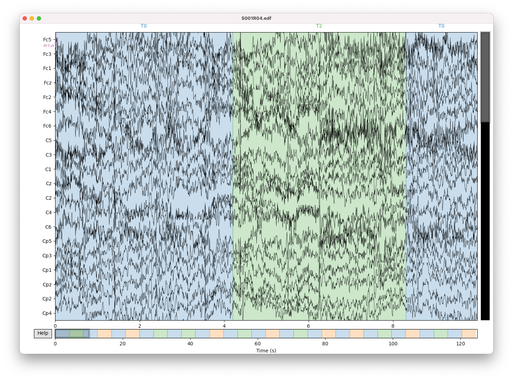
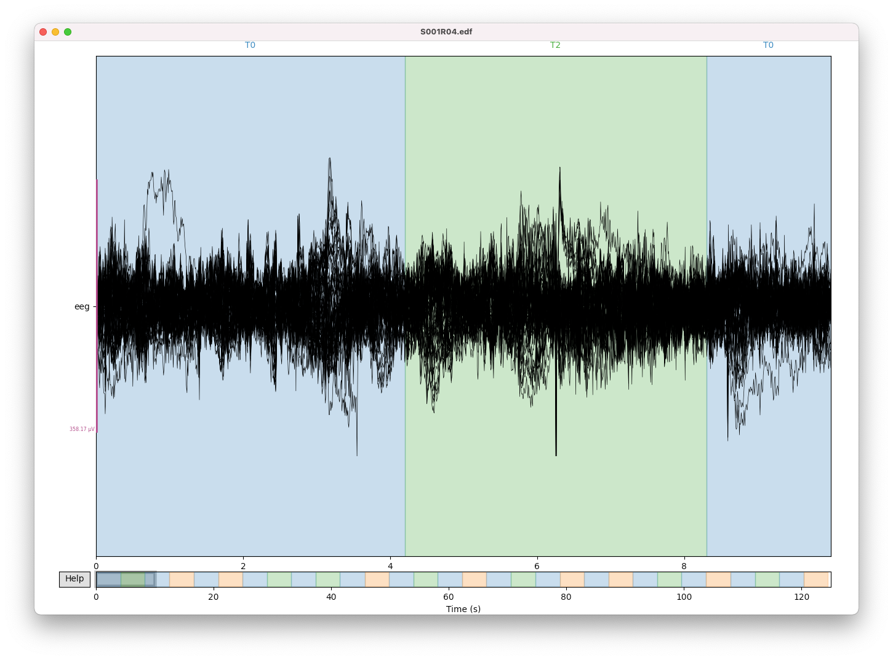
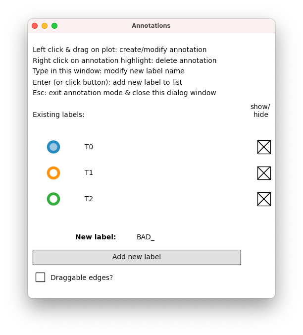

import mne
raw = mne.io.read_raw_edf("S001R04.edf", preload=True)
raw.rename_channels(lambda s: s.strip("."))
raw.drop_channels(["T9", "T10"])
raw.set_montage("easycap-M1", match_case=False)
raw.set_eeg_reference("average")Visualizing EEG data
Python
MNE
EEG
Artifacts
After importing EEG data, it is usually helpful to visualize the raw EEG traces. Despite the availability of numerous automated artifact removal or reduction techniques, manual inspection remains important (often in combination with automated methods) to obtain clean data. In this post, I show how to visualize an EEG data set and how to interactively mark segments containing artifacts.
Prerequisites
In this tutorial, we will continue to use the EEG motor movement/imagery data set from the previous post (again, we use run 4 of subject 1). I’ll quickly reiterate all steps we have performed so far:
Interactive visualization
We can now open an interactive visualization window as follows:
raw.plot()
The signals do not look quite right yet, so let’s walk through some interactive features of this plot. First, you can rescale the signals with the + and - keys. The default scaling is not really appropriate here, but pressing the - key a few times will result in a much nicer display. The topmost channel label Fc5 includes a purple scale bar which indicates the current scale of the data (the length of the purple bar corresponds to 40 µV in this example). This scale applies to all channels of the same type (such as all EEG channels). If the scale bar gets in your way, you can toggle it with the s key.
Notice that 20 channels are visible per page by default. To view the remaining channels, you can scroll down with the ↓ key. Conversely, you can scroll back up again by pressing the ↑ key. Alternatively, you can increase or decrease the number of channels visible on a page with the Page Up or Page Down keys, respectively (if you don’t have these keys on your Mac, you can use the combinations fn↑ and fn↓ instead).
By default, 10 seconds of data are visible per page. If you want to navigate in time, you can use the → and ← keys to move forward and backward by a quarter of the visible duration (in this example by 2.5 seconds). Pressing Shift→ and Shift← will scroll forward/backward by a whole page (10 s here).
You can increase or decrease the amount of time shown per page with the End or Home keys (if you don’t have these keys on your Mac, these shortcuts can usually be accessed with fn→ and fn←).
The following table summarizes all keyboard shortcuts for the interactive visualization window (we will discuss annotation, butterfly, and zen modes in a minute). Note that the “Help” button in the lower left corner (or pressing the ? key) pops up a dialog window with these shortcuts.
| Action | Keyboard shortcut |
|---|---|
| Scale up | + |
| Scale down | - |
| Scroll up | ↑ |
| Scroll down | ↓ |
| Scroll left (quarter page) | ← |
| Scroll right (quarter page) | → |
| Scroll left (whole page) | Shift← |
| Scroll right (whole page) | Shift→ |
| More channels | Page Up |
| Fewer channels | Page Down |
| More time | End |
| Less time | Home |
| Scale bars | s |
| Zen mode (toggle scrollbars) | z |
| DC removal | d |
| Annotation mode | a |
| Butterfly mode | b |
| Draggable annotations | p |
| Help | ? |
You can change initial settings with arguments to raw.plot(). For example, we might use the following arguments to start with suitable values for our example data:
raw.plot(n_channels=64, duration=5, scalings={"eeg": 75e-6}, start=10)The example data contains annotations (stored in raw.annotations), which are visualized as colored patches (the annotation descriptions are located at the top of the plot). In this case, the blue, red, and green patches correspond to T0, T1, and T2, respectively.
In addition to keyboard shortcuts, you can also use the mouse to navigate through the data. You might have already noticed the horizontal bar below the plot. This overview bar summarizes the entire time range of the signal, and the currently visible time segment is highlighted by a gray box. You can click inside the overview bar to quickly skip around to different time segments. Furthermore, the overview bar also shows annotations.
To quickly identify time segments with high variance, you can switch to butterfly mode by pressing the b key. Signals of all channels of the same type will be collapsed onto each other, which makes it easy to spot abnormal activity. Press b again to exit butterfly mode.

If you want to focus on the actual signals with fewer distractions, you can get rid of the scroll and overview bars. Press z (zen mode) to toggle these user interface elements.
Finally, you can quickly filter out offsets (slow drifts) in the signals by pressing the d key (toggle DC removal).
Annotating segments
We are now ready to interactively create annotations, for example to mark segments containing artifacts. To this end, we switch to annotation mode by pressing the a key. A small dialog window will pop up. Make sure to keep this dialog window open as long as you want to stay in annotation mode – if you close it, you will return to normal visualization mode.
The annotations dialog shows a list of currently available annotations (T0, T1, and T2 in our example data). The annotation label marked with a filled circle is currently active (T0), which means that if we create a new annotation in the data window (more on this soon), it will be of this type. However, we can also create new annotation types. Notice that the “BAD_” label is actually an input text field – you can start typing/editing to change the annotation label before creating it. We would like to create annotations called “BAD”, so let’s remove the underscore by pressing the Backspace key once. The new annotation type gets added to the list of available labels once you click on the large “Add new label” button or hit the Enter key.

Important
Annotation labels starting with “BAD” (or “bad”) are special in MNE, because many functions ignore data marked by such annotations. This gives us a nice way to mark artifact segments without completely discarding data points.
Let’s create some “BAD” annotations in our example data. First, we make sure that the “BAD” label is active by clicking inside the red ring (active labels are represented by a filled circle). Optionally, we can hide all T0, T1, and T2 annotations by clicking on their “show/hide” checkboxes. Now we switch back to the main visualization window (again, make sure not to close the annotation window). Using the mouse, we can now click and drag to select a portion of the data and mark it with the currently active “BAD” label. During this process, you can interactively scroll around in the data with the keyboard shortcuts listed before, or you can click within the overview bar below the plot.
If you want to edit the start and/or end point of an existing annotation, press the p key or click the “Draggable edges?” checkbox to toggle snap mode. If snap mode is enabled, you can drag the start and/or end points of an annotation to the desired locations. It is impossible to create an annotation inside another annotation with snap mode enabled, so that’s when you want to turn it off. Overlapping annotations of the same type will be merged to a single annotation. If you want to completely delete an annotation, you can right-click on it and it disappears.
When you are done, you can close the annotation window. You can also close the visualization window, because all annotations are automatically stored in the raw.annotations attribute. Let’s take a look what it looks like now:
raw.annotations<Annotations | 39 segments: BAD (9), T0 (15), T1 (8), T2 (7)>Yay, we’ve just created 9 new annotations, all of which are interpreted as bad (because they start with the word “BAD” or “bad”).
Marking channels
Sometimes, signals are noisy in particular channels during the whole recording. In such cases, it is possible to mark the whole channel as bad. In the visualization window, click on a channel label on the left side of the plot or on a channel trace to mark a channel as bad (the label and associated time course will turn gray to reflect this). If you want to unmark a channel, click on its label (or its trace) again. The selection of bad channels is immediately stored in raw.info["bads"] (a list containing the channel labels of all bad channels). Channels marked as bad are generally ignored by MNE functions.
Saving and loading annotations
Although changes to annotations or bad channels are immediately reflected in raw.annotations and raw.info["bads"], we still need a way to persistently store this information for later use. Consequently, we will also need a way to load this information and associate it with an existing raw object.
It is always a good idea to use simple storage formats whenever possible. Therefore, MNE allows us to store annotations as simple text files. Here’s how we could save annotations in a file called S001R04_annotations.txt:
raw.annotations.save("S001R04_annotations.txt", overwrite=True)This creates a comma-separated text file with three columns “onset”, “duration”, and “description”. Onsets are relative to the start of the recording (so they start at zero), and both onsets and durations are measured in seconds. If you specify a .csv instead of a .txt extension, you will get absolute time stamps for the onsets (based on the measurement onset time stamp).
We can read this file with:
annotations = mne.read_annotations("S001R04_annotations.txt")Finally, we can associate these annotations with an existing raw object:
raw.set_annotations(annotations)Saving and loading bad channels
The following lines of code store the list of bad channels in a text file called S001R04_bads.txt:
with open("S001R04_bads.txt", "w") as f:
f.write(",".join(raw.info["bads"]))
f.write("\n")To load this file and update an existing raw object, we can use:
with open("S001R04_bads.txt") as f:
raw.info["bads"] = f.read().strip().split(",")